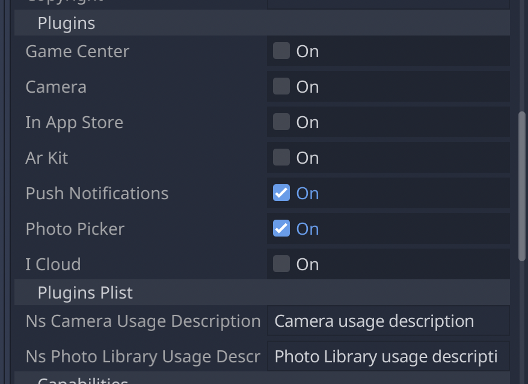

Work in progress
The content of this page was not yet updated for Godot
4.7
and may be outdated. If you know how to improve this page or you can confirm
that it's up to date, feel free to open a pull request.
Creating iOS plugins
This page explains what iOS plugins can do for you, how to use an existing plugin, and the steps to code a new one.
iOS plugins allow you to use third-party libraries and support iOS-specific features like In-App Purchases, GameCenter integration, ARKit support, and more.
Loading and using an existing plugin
An iOS plugin requires a .gdip configuration file, a binary file which can be either .a static library or .xcframework containing .a static libraries, and possibly other dependencies. To use it, you need to:
Copy the plugin's files to your Godot project's
res://ios/pluginsdirectory. You can also group files in a sub-directory, likeres://ios/plugins/my_plugin.The Godot editor automatically detects and imports
.gdipfiles insideres://ios/pluginsand its subdirectories.You can find and activate detected plugins by going to Project -> Export... -> iOS and in the Options tab, scrolling to the Plugins section.

When a plugin is active, you can access it in your code using Engine.get_singleton():
if Engine.has_singleton("MyPlugin"):
var singleton = Engine.get_singleton("MyPlugin")
print(singleton.foo())
Note
The plugin's files have to be in the res://ios/plugins/ directory or a subdirectory, otherwise the Godot editor will not automatically detect them.
Creating an iOS plugin
At its core, a Godot iOS plugin is an iOS library (.a archive file or .xcframework containing static libraries) with the following requirements:
The library must have a dependency on the Godot engine headers.
The library must come with a
.gdipconfiguration file.
An iOS plugin can have the same functionality as a Godot module but provides more flexibility and doesn't require to rebuild the engine.
Here are the steps to get a plugin's development started. We recommend using Xcode as your development environment.
See also
The Godot iOS Plugins.
The Godot iOS plugin template gives you all the boilerplate you need to get your iOS plugin started.
To build an iOS plugin:
Create an Objective-C static library for your plugin inside Xcode.
Add the Godot engine header files as a dependency for your plugin library in
HEADER_SEARCH_PATHS. You can find the setting inside theBuild Settingstab:Download the Godot engine source from the Godot GitHub page.
Run SCons to generate headers. You can learn the process by reading Compiling for iOS. You don't have to wait for compilation to complete to move forward as headers are generated before the engine starts to compile.
You should use the same header files for iOS plugins and for the iOS export template.
In the
Build Settingstab, specify the compilation flags for your static library inOTHER_CFLAGS. The most important ones are-fcxx-modules,-fmodules, and-DDEBUGif you need debug support. Other flags should be the same you use to compile Godot. For instance:
-DPTRCALL_ENABLED -DDEBUG_ENABLED -DDEBUG_MEMORY_ALLOC -DDISABLE_FORCED_INLINE -DTYPED_METHOD_BIND
Add the required logic for your plugin and build your library to generate a
.afile. You will probably need to build bothdebugandreleasetarget.afiles. Depending on your needs, pick either or both. If you need both debug and release.afiles, their name should match following pattern:[PluginName].[TargetType].a. You can also build the static library with your SCons configuration.The iOS plugin system also supports
.xcframeworkfiles. To generate one, you can use a command such as:
xcodebuild -create-xcframework -library [DeviceLibrary].a -library [SimulatorLibrary].a -output [PluginName].xcframework
Create a Godot iOS Plugin configuration file to help the system detect and load your plugin:
The configuration file extension must be
gdip(e.g.:MyPlugin.gdip).The configuration file format is as follow:
[config] name="MyPlugin" binary="MyPlugin.a" initialization="init_my_plugin" deinitialization="deinit_my_plugin" [dependencies] linked=[] embedded=[] system=["Foundation.framework"] capabilities=["arkit", "metal"] files=["data.json"] linker_flags=["-ObjC"] [plist] PlistKeyWithDefaultType="Some Info.plist key you might need" StringPlistKey:string="String value" IntegerPlistKey:integer=42 BooleanPlistKey:boolean=true RawPlistKey:raw=" <array> <string>UIInterfaceOrientationPortrait</string> </array> " StringPlistKeyToInput:string_input="Type something"
The config section and fields are required and defined as follow:
name: name of the plugin
binary: this should be the filepath of the plugin library (
aorxcframework) file.
The filepath can be relative (e.g.:
MyPlugin.a,MyPlugin.xcframework) in which case it's relative to the directory where thegdipfile is located.The filepath can be absolute:
res://some_path/MyPlugin.aorres://some_path/MyPlugin.xcframework.In case you need multitarget library usage, the filename should be
MyPlugin.aand.afiles should be named asMyPlugin.release.aandMyPlugin.debug.a.In case you use multitarget
xcframeworklibraries, their filename in the configuration should beMyPlugin.xcframework. The.xcframeworkfiles should be named asMyPlugin.release.xcframeworkandMyPlugin.debug.xcframework.
The dependencies and plist sections are optional and defined as follow:
dependencies:
linked: contains a list of iOS frameworks that the iOS application should be linked with.
embedded: contains a list of iOS frameworks or libraries that should be both linked and embedded into the resulting iOS application.
system: contains a list of iOS system frameworks that are required for plugin.
capabilities: contains a list of iOS capabilities that is required for plugin. A list of available capabilities can be found at Apple UIRequiredDeviceCapabilities documentation page.
files: contains a list of files that should be copied on export. This is useful for data files or images.
linker_flags: contains a list of linker flags to add to the Xcode project when exporting the plugin.
plist: should have keys and values that should be present in
Info.plistfile.
Each line should follow pattern:
KeyName:KeyType=KeyValueSupported values for
KeyTypearestring,integer,boolean,raw,string_inputIf no type is used (e.g.:
KeyName="KeyValue")stringtype will be used.If
rawtype is used value for corresponding key will be stored inInfo.plistas is.If
string_inputtype is used you will be able to modify value in Export window.